REPARACIÓN DE LA UNIDAD
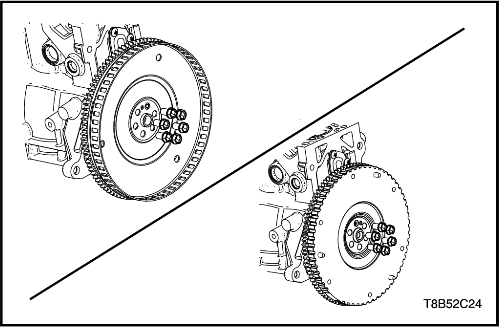


Piezas de accesorios
Herramientas necesarias
DW100-030 Soporte - Revisión del motor
Procedimiento de desmontaje
- Desmonte el volante motor (transmisión manual) o la placa de acoplamiento flexible (transmisión automática) del conjunto del motor.
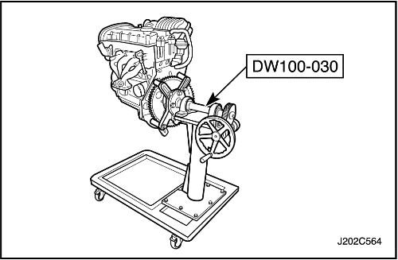
- Instale el soporte de reparación del motor (DW100-030) en el motor.
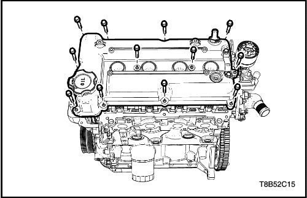
- Desmonte la tapa de la culata. Consulte el apartado "Tapa de la culata" en esta sección.
- Desmonte la correa de accesorios. Consulte el apartado "Correa de accesorios" en esta sección.
- Desmonte la bomba de la dirección asistida. Consulte la Sección 6B, Bomba de la dirección asistida.
- Desmonte el compresor del A/A. Consulte la Sección 7B, Compresor del A/A.
- Desmonte el alternador. Consulte la sección 1E, Sistema eléctrico del motor.
- Desmonte la correa y el tensor de accesorios. Consulte el apartado "Correa de accesorios" en esta sección.
- Desmonte la bomba de agua. Consulte la Sección 1D, Sistema de refrigeración del motor.
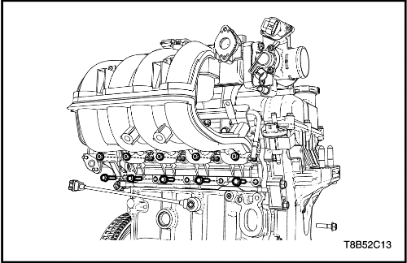
- Desmonte el colector de admisión. Consulte el apartado "Colector de admisión" de esta sección.
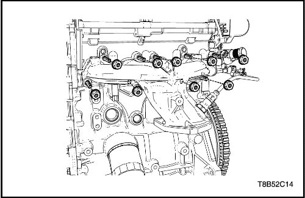
- Desmonte el colector de escape. Consulte el apartado "Colector de escape" de esta sección.
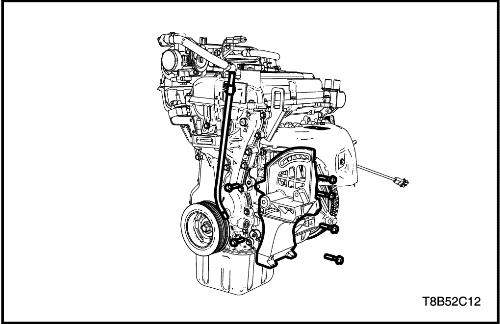
- Desmonte el tubo guía de la varilla de nivel de aceite.
- Desmonte el soporte de la bomba de la dirección asistida y del compresor del A/A.
procedimiento de montaje
- Monte el soporte de la bomba de la dirección asistida y del compresor del A/A.
Apretar
- Tornillos de fijación del soporte de la bomba de la dirección asistida: 20 N•m (14,7 lb-pie).
- Tornillos del soporte de fijación del compresor del A/A: 30 N•m (22,1 lb-pie).
- Monte el tubo guía de la varilla de nivel de aceite.
Apretar
Tornillo de fijación del tubo de la varilla de nivel del aceite: 10,5 N•m (7,7 lb-pie).
- Monte la bomba de agua. Consulte la Sección 1D, Sistema de refrigeración del motor.
- Monte el colector de escape Consulte el apartado "Colector de escape" de esta sección.
- Monte el colector de admisión. Consulte el apartado "Colector de admisión" de esta sección.
- Monte el tensor de la correa de accesorios. Consulte el apartado "Correa de accesorios" en esta sección.
- Monte el alternador. Consulte la sección 1E, Sistema eléctrico del motor.
- Monte el compresor del A/A. Consulte la Sección 7B, Compresor del A/A.
- Monte la bomba de la dirección asistida. Consulte la Sección 6B, Bomba de la dirección asistida.
- Monte la correa de accesorios. Consulte el apartado "Correa de accesorios" en esta sección.
- Monte la tapa de la culata. Consulte el apartado "Tapa de la culata" en esta sección.
- Desmonte el motor de su soporte de reparación (DW100-030).
- Monte el volante motor (transmisión manual) o la placa de acoplamiento flexible (transmisión automática) en el conjunto del motor.
Apretar
Tornillos del volante motor/placa de acoplamiento flexible: 45 N•m (33,2 lb-pie).
Culata
Procedimiento de desmontaje
- Desmonte las piezas de los accesorios. Consulte el apartado "Piezas de accesorios" de esta sección.
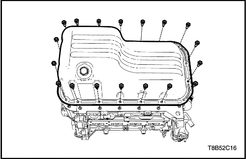
- Desmonte el cárter del aceite. Consulte el apartado "Cárter del aceite" de esta sección.
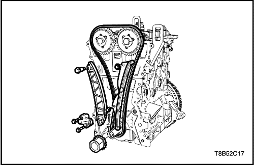
- Extraiga la cadena de distribución. Consulte el apartado "Sistema de cadena de distribución" de esta sección.
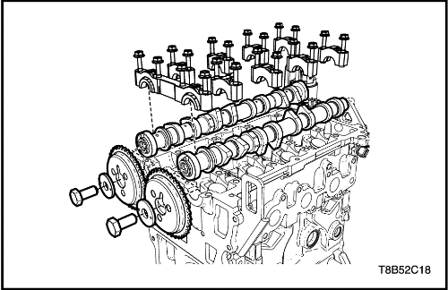
- Desmonte el árbol de levas. Consulte el apartado "Reparación de la unidad-Árbol de levas"de esta sección.
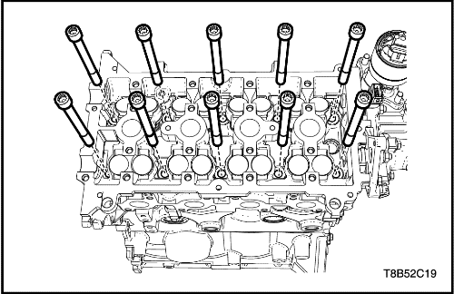
- Quite los tornillos de la culata.
- Desmonte la culata con su junta.

Comprobación de la culata
Precaución: Tenga mucho cuidado de no rayar, mellar o dañar la superficie de la culata. Si no fuera así, el motor podría sufrir daños.
- Limpie las superficies de cierre.
- Revise la culata y compruebe las siguientes anomalías:
- Grietas, daños o depósitos en las cámaras de combustión.
- Suciedad en los conductos de aceite. Limpie los conductos hasta eliminar toda la sociedad.
- Fugas de refrigerante o daños en la superficie de junta.
- Daños en las superficies de las juntas.
- Daños en los orificios roscados de tornillos.
- Zonas quemadas o desgastadas en la cámara de combustión.
- Grietas en las salidas de escape y en las cámaras de combustión.
- Grietas externas en los conductos de agua.
- Restricciones en los conductos de admisión o escape.
- Obstrucciones en los conductos del sistema de refrigeración.
- Tapones oxidados, dañados o con fugas.
- Si la culata está agrietada o dañada, debe ser sustituida. No se recomienda soldar o reparar la culata.
- Mida la holgura entre la regla y la cara de junta de la culata utilizando una galga en cuatro puntos a lo largo de la regla.
- Compruebe la existencia de deformaciones y alabeo en las superficies de cierre. Las superficies de cierre de la culata deben quedar planas según las especificaciones (consulte las Especificaciones del motor en la Sección).
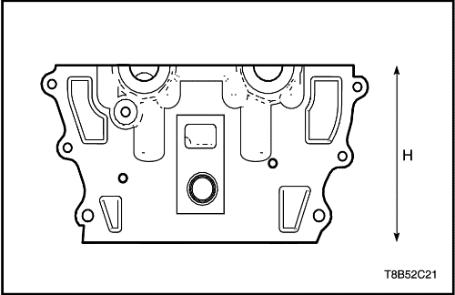
- Mida la altura de la culata, de superficie de cierre a superficie de cierre. La altura de la culata debe estar dentro de las especificaciones, sustituya la culata. Si la altura de la culata no está dentro de las especificaciones, sustituya la culata.
procedimiento de montaje
- Monte la culata con una junta nueva.
- Coloque los tornillos de la culata.
Apretar
Tornillos de la culata: 22 N•m + 82° (16,2 lb-pie + 82°)
- Monte el árbol de levas. Consulte el apartado "Reparación de la unidad-Árbol de levas"de esta sección.
- Monte la cadena de distribución. Consulte el apartado "Sistema de cadena de distribución" de esta sección.
- Monte el cárter del aceite. Consulte el apartado "Cárter del aceite" de esta sección.
- Monte los componentes de los accesorios. Consulte el apartado "Piezas de accesorios" de esta sección.
Árbol de levas
Procedimiento de desmontaje
Precaución: Tenga mucho cuidado de no rayar, mellar o dañar los cojinetes de los árboles de levas. Si no fuera así, el motor podría sufrir daños.
- Desmonte las piezas de los accesorios. Consulte el apartado "Piezas de accesorios" de esta sección.
- Desmonte la culata. Consulte el apartado "reparación de la unidad - culata" de esta sección.
Aviso: La rueda dentada de admisión del árbol de levas es la misma que la rueda dentada de escape.
Precaución: Asegúrese de que las tapas del árbol de levas han sido colocadas en la posición y dirección originales. Si no fuera así, el motor podría sufrir daños.
- Desmonte el piñón del árbol de levas.
- Desmonte la tapa de cojinetes de los árboles de levas.
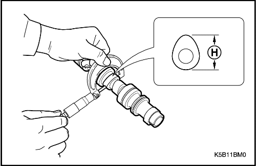
Medición e inspección
- Mida la elevación del árbol de levas. Si está fuera de las especificaciones, sustitúyalo. Consulte el apartado "Especificaciones del motor" de esta sección.
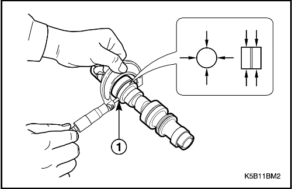
- Mida el diámetro exterior de la muñequilla del árbol de levas. Si está fuera de las especificaciones, sustitúyalo. Consulte el apartado "Especificaciones del motor" de esta sección.
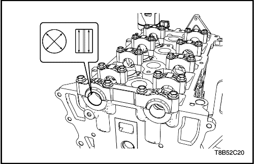
- Monte la tapa de cojinetes del árbol de levas en la culata.
Apretar
Tornillos de las tapas de árboles de levas: 10 N•m (7,4 lb-pie).
- Mida el diámetro interior de la muñequilla del árbol de levas. Si está fuera de las especificaciones, sustitúyalo. Consulte el apartado "Especificaciones del motor" de esta sección.
procedimiento de montaje
Precaución: Tenga mucho cuidado de no rayar, mellar o dañar los cojinetes de los árboles de levas. Si no fuera así, el motor podría sufrir daños.
- Engrase la superficie del árbol de levas con aceite de motor limpio.
- Instale las tapas de los cojinetes de los árboles de levas.
- Ponga los tornillos de las tapas de los cojinetes de los árboles de levas.
Apretar
Tornillos de las tapas de árboles de levas: 10 N•m (7,4 lb-pie).
- Monte el piñón del árbol de levas.
- Coloque los tornillos de la tapa de los árboles de levas.
Apretar
Tornillos de fijación de la rueda dentada del árbol de levas: 60 N•m (44,2 lb-pie).
- Monte la culata. Consulte el apartado "reparación de la unidad - culata" de esta sección.
- Monte los componentes de los accesorios. Consulte el apartado "Reparación de la unidad-Piezas de accesorios" de esta sección.
componentes de la serie de válvulas
Herramientas necesarias
EN-49074 Compresor - Muelle de válvula universal
EN-49075 Adaptador - Compresión del muelle de la válvula
Procedimiento de desmontaje
- Desmonte el árbol de levas. Consulte el apartado "Reparación de la unidad-Árbol de levas"de esta sección.
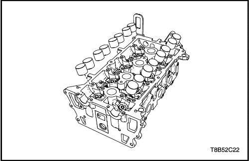
Precaución: No rasque el taqué de válvula Y no debe utilizar ni guantes ni herramientas.
- Desmonte el taqué de válvula.
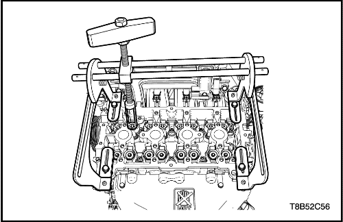
- Instale el compresor universal de muelles de válvulas (EN-49074) y el adaptador (EN-49075).
- Desmonte la chaveta de válvula.
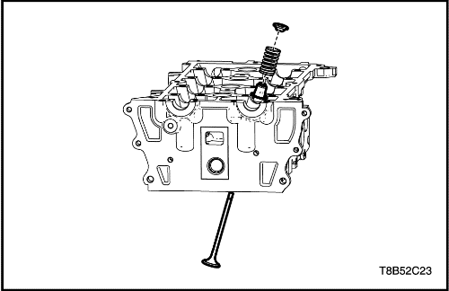
- Desmonte la chaveta de retención, el muelle de válvula y la junta.
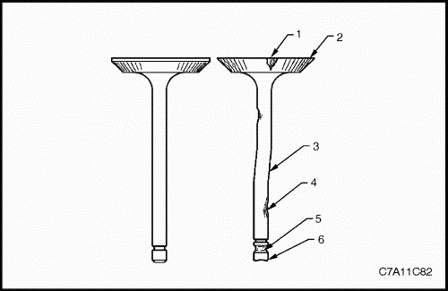
Comprobación de las válvulas
- Compruebe si la válvula tiene daños desde la cabeza hasta la punta.
- depósitos en la zona del asiento de la válvula (1)
- falta de margen en la válvula (2)
- curvado del vástago de la válvula (3)
- depósitos o desgaste excesivo del vástago (4)
- ranuras de la chaveta de la válvula desgastadas (5)
- punta de la válvula desgastada (6)
- Sustituya la válvula si se da alguno de estos problemas.
- Compruebe los muelles de válvula. Si los extremos del muelle de válvula no son paralelos, sustituya el muelle.
- Compruebe la superficie de asiento de los muelles de válvula de los rotadores de válvulas en busca de desgastes o surcos. Sustituya según necesidades.
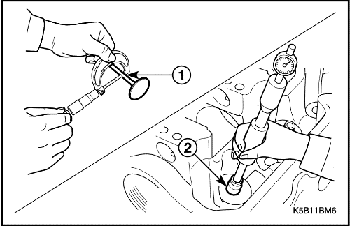
Aviso: La guía de válvula no puede moverse. Sustituya la culata si está fuera de las especificaciones.
- Mida el diámetro del vástago de la válvula y el diámetro interior de la guía de la válvula. Si está fuera de las especificaciones, sustitúyalo. Consulte el apartado "Especificaciones del motor" de esta sección.
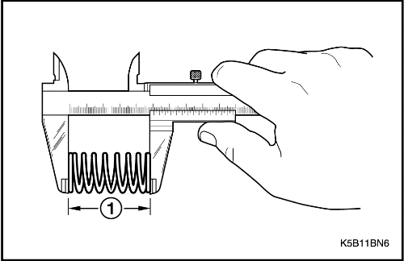
- Mida la longitud libre del muelle de la válvula. Si está fuera de las especificaciones, sustitúyalo. Consulte el apartado "Especificaciones del motor" de esta sección.
procedimiento de montaje
- Instale la chaveta de retención, el muelle de válvula y la junta.
- Instale el compresor universal de muelles de válvula (EN-49074) y el adaptador (EN-49075) en la culata.
- Monte la chaveta de válvula.
Precaución: No rasque el taqué de válvula Y no debe utilizar ni guantes ni herramientas.
- Instale el taqué de válvula.
- Monte el árbol de levas. Consulte el apartado "Reparación de la unidad-Árbol de levas"de esta sección.
Pistón / Aro / Biela
Herramientas necesarias
EN-49078 Instalador - Pistón
Procedimiento de desmontaje
Precaución: Tenga mucho cuidado de no rayar o dañar el lado interno del cilindro, pistón y cojinetes de la tapa de la biela.
- Desmonte la culata. Consulte el apartado "reparación de la unidad - culata" de esta sección.
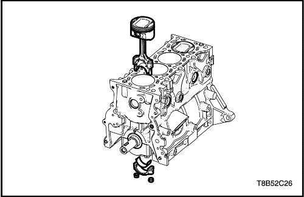
Importante: Compruebe y confirme la secuencia de montaje del pistón y la secuencia de montaje del cojinete de biela, no confunda dichas secuencias.
- Desmonte el conjunto del pistón con el cojinete de la biela.
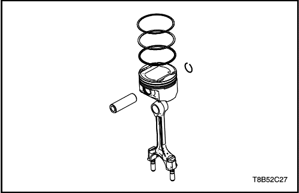
- Separe el bulón del pistón.
- Separe el aro del pistón.
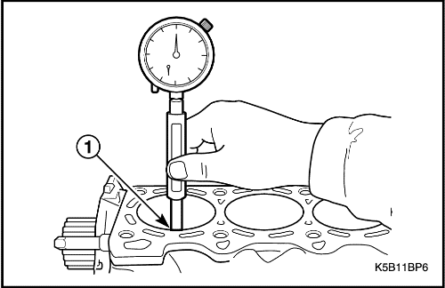
Inspección
- Limpie el interior del cilindro con un trapo limpio.
- Compruebe si está dañado el interior del cilindro.
- Mida el diámetro interior del cilindro. Si está fuera de las especificaciones, sustitúyalo. Consulte el apartado "Especificaciones del motor" de esta sección.
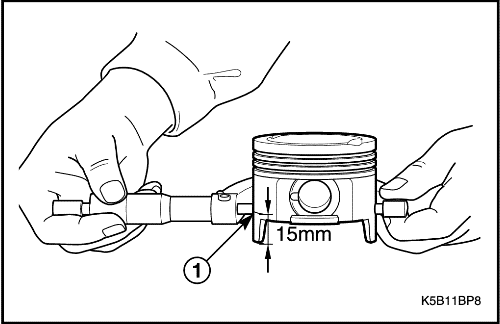
- Limpie el pistón con un trapo limpio.
- Mida el diámetro exterior del pistón a 15 mm de altura respecto a la parte inferior. Si está fuera de las especificaciones, sustitúyalo. Consulte el apartado "Especificaciones del motor" de esta sección.
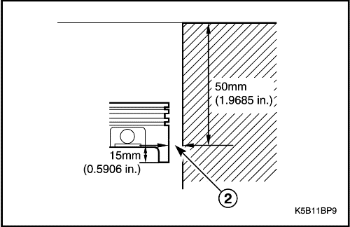
- Mida el diámetro interior del cilindro a 50 mm por debajo de la superficie de la culata y la holgura del pistón a 15 mm por encima del extremo de la falda del pistón. Si está fuera de las especificaciones, sustitúyalo. Consulte el apartado "Especificaciones del motor" de esta sección.
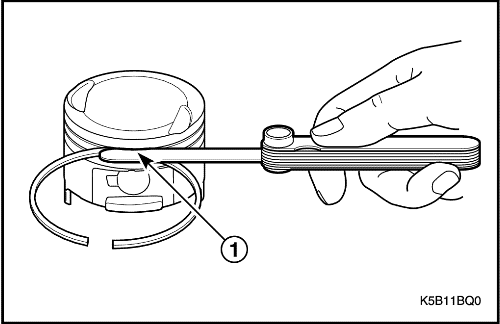
- Mida la holgura de la ranura del aro del pistón. Si la holgura de ranuras del segmento del pistón está fuera de las especificaciones, sustituya el pistón y los segmentos. Consulte el apartado "Especificaciones del motor" de esta sección.
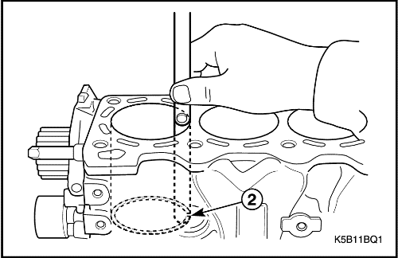
- Mida la holgura del aro del pistón. Si la distancia entre puntas del segmento está fuera de las especificaciones, sustituya el segmento del pistón. Consulte el apartado "Especificaciones del motor" de esta sección.
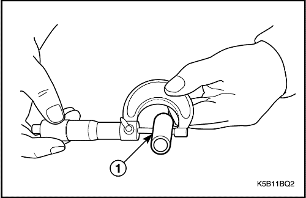
- Mida el bulón del pistón. Si está fuera de las especificaciones, sustitúyalo. Consulte el apartado "Especificaciones del motor" de esta sección.
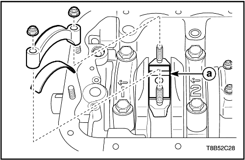
- Corte el indicador (a) plástico a la misma longitud que la anchura del cojinete y colóquelo en el cojinete del cigüeñal. Debería quedar en paralelo con respecto al cigüeñal.
- Monte el cojinete de biela y las tapas. Apriételo.
Apretar
Tuercas de las tapas de cojinetes de las bielas: 33 N•m (24,3 lb-pie)
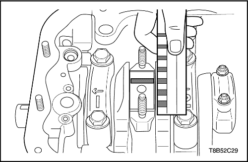
- Desmonte las tapas y los cojinetes de biela de nuevo.
- Mida la holgura del aceite del cojinete de la biela según la escala del indicador de plástico.
procedimiento de montaje
Precaución: Tenga mucho cuidado de no rayar o dañar el lado interno del cilindro, pistón y cojinetes de la tapa de la biela.
- Instale el aro en el pistón.
- Monte la biela con el bulón en el pistón.
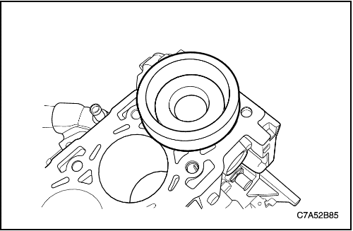
- Instale el conjunto del pistón en el cilindro utilizando el instalador de pistones (EN-49078).
- Instale el conjunto del pistón y las tapas de cojinetes de las bielas con el cojinete.
- Apriete las tuercas de las tapas de los cojinetes de biela.
Apretar
Tuercas de las tapas de cojinetes de las bielas: 33 N•m (24,3 lb-pie)
- Monte la culata. Consulte el apartado "reparación de la unidad - culata" de esta sección.
Bloque del motor
Herramientas necesarias
EN-49071 Instalador-Junta trasera del cigüeñal
Procedimiento de desmontaje
Precaución: Tenga mucho cuidado de no rayar, mellar o dañar el lado interior del cilindro y los cojinetes. Si no fuera así, el motor podría sufrir daños.
- Desmonte el conjunto del pistón. Consulte el apartado "Reparación de la unidad-Pistón/Aro/Biela" de esta sección.
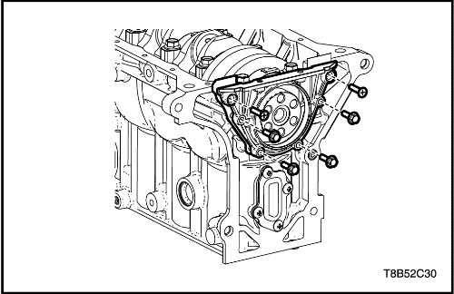
- Desmone la tapa de la junta de aceite trasera del cigüeñal con la junta.
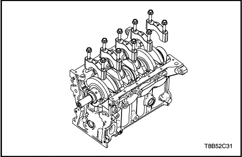
Precaución: Revise y confirme la secuencia del cojinete del cigüeñal para evitar confusiones. Si no fuera así, el motor podría sufrir daños.
- Desmonte la tapa de cojinetes lisos del cigüeñal.
- Desmonte el cigüeñal.
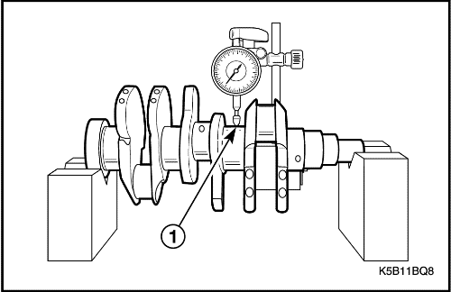
Procedimiento de inspección
- Mida la ovalización (curvado) del cigüeñal. Si está fuera de las especificaciones, sustitúyalo. Consulte el apartado "Especificaciones del motor" de esta sección.
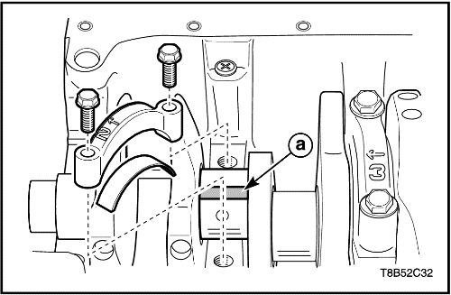
- Corte el indicador (a) plástico a la misma longitud que la anchura del cojinete y colóquelo en el cojinete del cigüeñal. Debería quedar en paralelo con respecto al cigüeñal.
- Instale el cojinete liso del cigüeñal y la tapa.
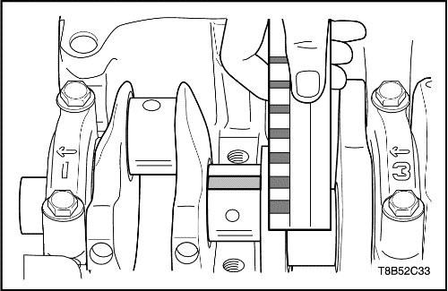
- Desmonte el cojinete de la biela y la tapa de nuevo.
- Mida la holgura del aceite del cojinete de la biela según la escala del indicador de plástico. Si está fuera de las especificaciones, sustitúyalo por uno nuevo. Consulte el apartado "Especificaciones del motor" de esta sección.
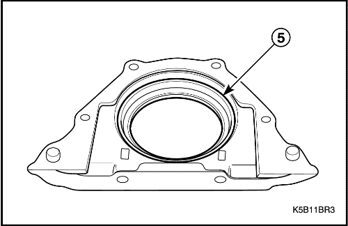
- Compruebe la tapa de la junta de aceite trasera del cigüeñal y la junta de aceite. Si aparece dañada o con fugas, sustitúyala.
procedimiento de montaje
Precaución: Revise y confirme la secuencia de la tapa del cojinete liso del cigüeñal para evitar confusiones. Si no fuera así, el motor podría sufrir daños.
- Monte la tapa del cojinete liso del cigüeñal.
- Apriete el tornillo de la tapa del cojinete listo del cigüeñal.
Apretar
Tornillos de la tapa de cojinetes del cigüeñal: 57,5 N•m (42,4 lb-pie).
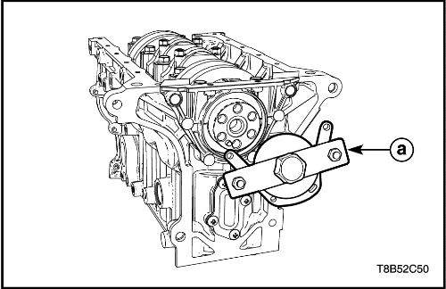
- Instale la junta de aceite trasera del cigüeñal utilizando el instalador de retenes de aceite traseros del cigüeñal (EN-49071).
- Instale la tapa de la junta de aceite trasera del cigüeñal.
- Coloque los tornillos de la tapa de la junta de aceite trasera del cigüeñal.
Apretar
Tornillos de la tapa de la junta de aceite trasera del cigüeñal (M6 x 1,0): 10,5 N•m (7,7 lb-pie).
- Desmonte el conjunto del pistón. Consulte el apartado "Reparación de la unidad-Pistón/Aro/Biela" de esta sección.
| © Copyright Chevrolet Europe. Reservados todos los derechos |